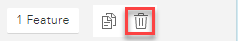

ASD can cover the Whole road, in which case the geometry is taken from the ESUs making up the street and you don't need to draw the geometry, or Part of road where you need to draw the polyline detail for the part of the road that the ASD covers.
The drawing of the geometry is the same for all types of ASD records.
First you need to change the Applied to to be Part of road. Once you have done this the geometry drawing tools become available on the map. You may override the default snapping by selecting Sketch Settings.
Modifying existing geometry
If you had already created a record as Whole road, then the geometry would already have been created so you just need to decide if you wish to modify the existing geometry or draw a brand new polyline for the section of the road that the ASD applies to. Note: If you need to move the map whilst you are drawing your polyline simply hold down the left mouse button and drag the map in the direction you require and then you can continue drawing.
•First change the Applied to from Whole road to Part of road.
•Now click on one of the Select tools in the Map Toolbar to select the geometry.

This displays the nodes on the polyline.
•To remove a node, select it with the mouse and press the Delete key on the keyboard.
•To move a node, select it with the mouse and drag it to a new location.
•To delete the entire feature you can either select it and then click the Delete feature from the Map tools

or you can select the Draw a polyline tool and draw a new polyline as you would if you were creating new geometry (see below for details).
•When you are happy click OK to validate your entry.
•Click Save to update the street with the ASD.
Creating new geometry
•Select the Draw a polyline tool from the map toolbar e.g.

•Click on the map for the start of the ASD and click again each time you wish to change direction. Double click to end the polyline. If you wish to change the shape you can simply drag the nodes to a different location.
•When you are happy click OK to validate your entry.
•Click Save to update the street with the ASD.